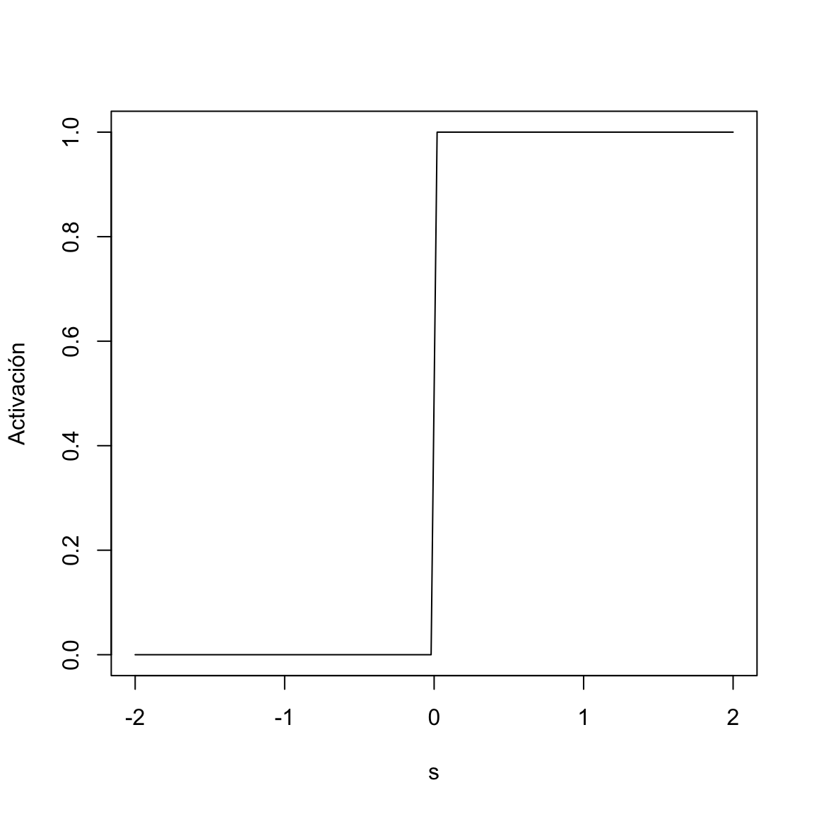
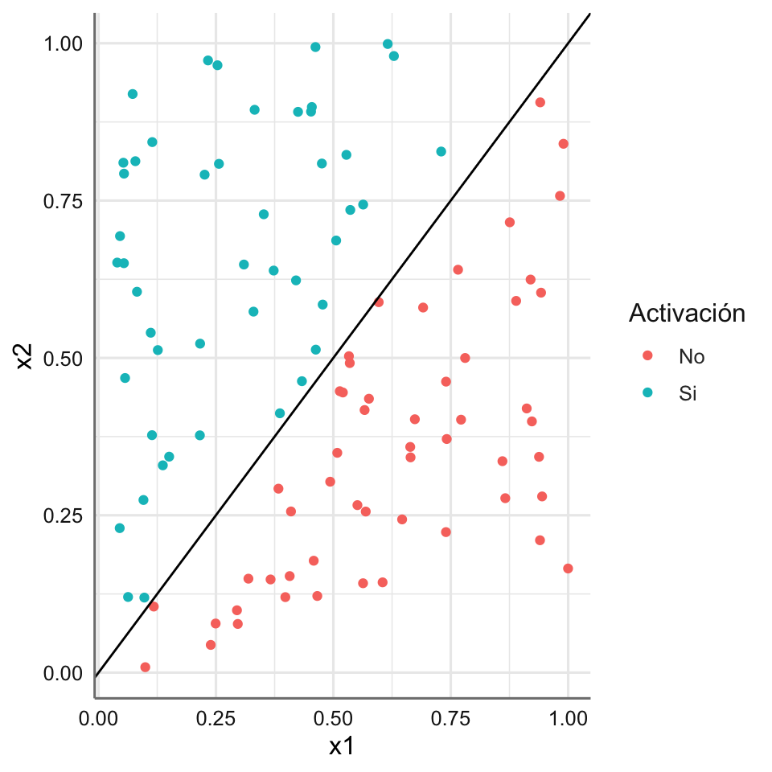
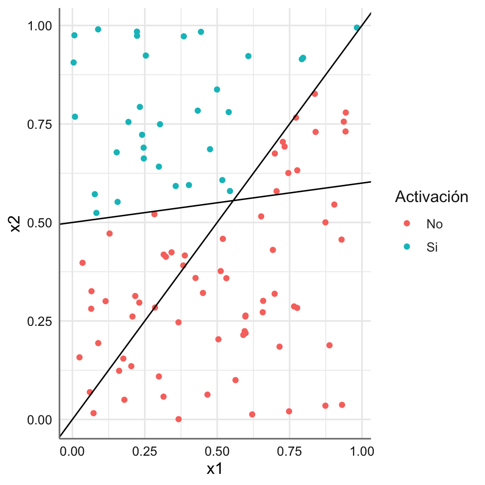

1 Introducción
En este tema se presentan los conceptos fundamentales de aprendizaje profundo o deep learning (DL), los tipos de rede neuronales así como su terminología, y finalizamos mostrando como usar el perceptrón lineal en un problema de clasificación binario.
1.1 Conceptos fundamentales del DL
Comenzamos con los conceptos matemáticos de neurona artificial y red neuronal.
1.1.1 Neurona artificial
Para poder modelizar de forma matemática el funcionamiento de una neurona es necesario conocer su funcionamiento biológico. De esta forma nos resultará posible construir la denominada neurona artificial que trata de replicar el funcionamiento de una neurona real. El comportamiento de una neurona se puede representar mediante este sencillo esquema:
- La señal entra en el núcleo de la neurona vía las dendritas o través de otra neurona.
- La conexión sináptica de cada dendrita puede tener una fuerza (peso) diferente y ajustable.
- En el núcleo, la señal de todas las dendritas (inputs) se combina (generalmente de forma aditiva) en un único efecto.
- Si la señal combinada es más fuerte que un umbral dado, entonces la neurona se activa a lo largo del axón, en el caso contrario permanece quieta, es decir, en la realización más sencilla, la intensidad de la señal tiene dos niveles posibles: encendido o apagado, es decir, 1 o 0, en función del valor del umbral. No se necesitan valores intermedios.
- Si la neurona se ha activado, el terminal del axón se conecta a las dendritas de otras neuronas o produce un estímulo de salida.
Traduciendo esto a una receta matemática, se asignan a las celdas de entrada los números \(x_1,...,x_n\) (punto de datos de entrada). La fuerza de las conexiones sinápticas se controla con los pesos \(w_1,...,w_n\). A continuación, la señal combinada se define como la suma ponderada:
\[s=\sum_{i=1}^n x_iw_i\]
La señal se convierte en un argumento de la función de activación (\(f\)), que, en el caso más sencillo, adopta la forma de la función de salto (step), es decir, cuando la señal combinada \(s\) es mayor que el sesgo (umbral) \(b\), la señal que pasa por el axón es 1. En el caso contrario, el valor de la señal generada es 0 (no hay activación):
\[f(s,b) = \begin{cases} 1 \text{ para } s \geq b \\ 0 \text{ para } s < b \\ \end{cases}\]
Esta representeción matemática es precisamente lo que necesitamos para imitar el prototipo biológico.
Existe una conveniente convención notacional que se utiliza con frecuencia. En lugar de separar el sesgo de los datos de entrada, podemos tratarlos todos uniformemente. La condición de activación puede transformarse trivialmente como:
\[s\geq b \rightarrow \sum_{i=1}^n x_iw_i - b \geq 0 \rightarrow \sum_{i=1}^n x_iw_i - x_0w_0 \geq 0 \rightarrow \sum_{i=0}^n x_iw_i \geq 0,\]
donde \(x_0 = 1\) y \(w_0 = -b\). En otras palabras, podemos tratar el sesgo como un peso en la arista conectada a una celda adicional con la entrada siempre fija a 1:
\[f(s,b) = \begin{cases} 1 \text{ para } s \geq 0 \\ 0 \text{ para } s < 0 \\ \end{cases}\]
con \(s=\sum_{i=0}^n x_iw_i\). En la figura siguiente viene representado el comportamiento de la neurona artificial:

Las ponderaciones \(w_0,w_1,...,w_n\) se denominan generalmente hiperparámetros. Determinan la funcionalidad de la neurona artificial y pueden modificarse durante el proceso de aprendizaje (entrenamiento, que analizaremos más adelante). Sin embargo, se mantienen fijos cuando se utiliza la neurona entrenada en una muestra de datos de entrada concreta.
Una propiedad esencial de las neuronas artificiales es la no linealidad de la función de activación, lo que permite la construcción de estructuras neuronales muy complejas con gran capacidad de aprendizaje.
A continuación vamos a ver como podemos implementar una neurona artificial utilizando una función muy simple, donde fijaremos los valores de \(x\) y \(w\), así como el balor de \(b\) para la activación de la neurona. En primer lugar definimos la función salto de activación de la neurona.
Representamos la función de activación para una secuencia de valores de s:
# Valores a evalaur
sval = seq(-2,2,length=100)
# Función de activación
res = salto(sval)
plot(sval,res,type="l", xlab="s",ylab="Activación")
Definimos ahora nuestra neurona artificail teniendo en cuenta que dada la construcción matemática se debe fijar que \(x_0 = 0\) y \(w_0 = -b\).
Podemos ver el funcionamiento de nuestra neurona con un ejemplo de muestra. la nerurona se activará cuando el resultado sea igual a 1, y no lo hará si el resultado es igual a cero.
En este caso la neurona se ha activado. Si cambiamos los valores de \(b\) podríamos tener diferentes representaciones de la activación de la neurona.
1.1.2 Red neuronal artificial
Las redes neuronales artificiales (RNA) son modelos computacionales que procesan información imitando el funcionamiento de las neuronas biológicas. El objetivo de las RNA es ayudar a que los sistemas informáticos puedan funcionar tal como un cerebro humano en cuanto a aprendizaje y pensamiento. De esta idea parte el concepto de “inteligencia artificial”.
La forma más común de representar la estructura de una red neuronal es mediante el uso de capas (layers), formadas a su vez por neuronas (unidades, units o neurons). Cada neurona, realiza una operación sencilla y está conectada a las neuronas de la capa anterior y de la capa siguiente mediante pesos, cuya función es regular la información que se propaga de una neurona a otra.
Las redes neuronales artificiales están conformadas por 3 tipos de nodos o neuronas:
- Nodos de entrada: reciben la información desde el exterior de la red (input).
- Nodos de salida: envían la información hacia el exterior de la red (output).
- Nodos ocultos: transmiten la información entre los nodos de la red. Por lo tanto, se encuentran en el medio de los nodos de entrada y de salida y no tienen contacto con el exterior.
Las RNA suelen estar conformadas por múltiples capas de nodos ocultos, a estas se les llaman “capas de aprendizaje”. A mayor cantidad de capas, mayor es la profundidad de la red y mayor es la capacidad de aprendizaje. En este contexto, los nodos de entrada reciben una serie de datos desde el exterior, estos datos son enviados al interior de la red hacia los nodos ocultos. Los nodos ocultos van procesando, modificando y transfiriendo la información de una capa a otra. Este proceso es lo que se conoce como “aprendizaje”, pues cada capa de nodos ocultos va aprendiendo de las capas más externas. Dicha secuencia de aprendizaje es lo que da origen al Deep Learning. De aquí la inseparable relación entre redes neuronales artificiales y Deep Learning.
Cuando las redes neuronales son entrenadas, cada red crea, modifica o elimina conexiones entre los nodos con el fin de dar respuestas más acertadas ante el problema que se busca resolver.
En este punto una red neuronal formada por una única neurona (neurona artificial) se caracteriza por:

- Una capa de entrada que recibe los datos en bruto, es decir, el valor de los predictores.
- Una capa oculta que recibe los valores de la capa de entrada, ponderados por los pesos.
- Una capa de salida que combina los valores que salen de la capa intermedia y cuya información se propaga a otra capa si la función de activación así lo determina.
Las funciones de activación convierten el valor neto de entrada en un nuevo valor, combinación de los input, pesos y bias. Es gracias a combinar funciones de activación no lineales con múltiples capas que los modelos de redes son capaces de aprender relaciones no lineales. La gran mayoría de funciones de activación convierten el valor de entrada neto de la neurona en un valor dentro del rango (0, 1) o (-1, 1). Cuando el valor de activación de una neurona (salida de su función de activación) es cero, se dice que la neurona está inactiva, ya que no pasa ningún tipo de información a las siguientes neuronas.
El modelo de red neuronal con una única capa (single-layer perceptron), aunque supuso un gran avance en el campo del Machine Learning, solo es capaz de aprender patrones sencillos. Para superar esta limitación, los investigadores descubrieron que, combinando múltiples capas ocultas, la red puede aprender relaciones mucho más complejas entre los predictores y la variable respuesta. A esta estructura se le conoce como perceptrón multicapa o multilayer perceptron (MLP), y puede considerarse como el primer modelo de Deep Learning.
La estructura de un perceptón multicapa consta de varias capas de neuronas ocultas. Cada neurona está conectada a todas las neuronas de la capa anterior y a las de la capa posterior. Aunque no es estrictamente necesario, todas las neuronas que forman parte de una misma capa suelen emplear la misma función de activación.
Combinando múltiples capas ocultas y funciones de activación no lineales los modelos de redes pueden aprender prácticamente cualquier patrón. De hecho, está demostrado que, con suficientes neuronas, un MLP es un aproximador universal para cualquier función. A continuación, se muestra la estructura de un MLP con tres capas ocultas con 6, 6, y 8 neuronas en cada una de ellas y con cuatro capas de salida o valores de predicción de la red:

1.2 Tipos redes neuronales
Dentro de las redes neuronales encontramos diferentes tipos, distinguiéndose estos por sus características y aplicaciones particulares. A continuación, detallamos las que vamos a desarrollar en próximos cuadernos:
- Redes neuronales monocapa. También conocidas como perceptrones simples, son las redes neuronales más simples y están compuestas por una única capa de neuronas que realizan una combinación lineal sobre las entradas. Una vez modificadas, las trasladan a una capa de neuronas de salida donde se aplica una función de activación para generar una salida. Este tipo de redes se utilizan cuando se pretende realizar una clasificación binaria o linealmente separable.

- Redes neuronales multicapa. Son una generalización de las anteriores, compuestas por dos o más capas de neuronas. En estas se introducen las capas ocultas, las cuales permiten que la red neuronal aprenda características más complejas de los datos de entrada y se combinan con la capa de entrada y la capa de salida para formar una arquitectura de red más compleja. En este caso no podemos especificar una aplicación concreta, pues se utilizan en una amplia variedad de aplicaciones en diversas áreas.

Redes neuronales convolucionales (CNN). Son una variante de las redes neuronales multicapa en las que cada neurona no se une con todas y cada una de las capas siguientes, sino que solo lo hace con un subgrupo de estas. Con esto se consigue reducir el número de neuronas y la complejidad computacional necesarias para su ejecución. Se utilizan para tareas de clasificación y detección de objetos en imágenes.
Redes neuronales recurrentes (RNN). Son redes neuronales que no tienen la típica estructura de capas, sino que permiten conexiones arbitrarias entre las neuronas, incluso pudiendo crear ciclos. Esto les permite tener memoria y retroalimentación de información, lo que las hace útiles en tareas que requieren un contexto o una memoria de largo plazo. Son especialmente útiles en tareas que involucren secuencias de datos, como el procesamiento del lenguaje natural y el reconocimiento de voz.

- Redes neuronales de base radial (RBF). Son redes neuronales multicapa que utilizan funciones radiales para calcular la distancia entre los datos y un conjunto de puntos denominados centros. La salida proporcionada consiste en una combinación lineal de las funciones de activación radiales utilizadas por las neuronas de manera individual. Se utilizan comúnmente en tareas de regresión y clasificación, siendo especialmente adecuadas en problemas de alta dimensionalidad.
1.3 Terminología básica
- Neurona o perceptrón: unidad básica de procesamiento en una red neuronal que procesa información mediante la aplicación de pesos y umbrales o sesgos para producir una salida.
- Capa: conjunto de neuronas que procesan la información de entrada y realizan una transformación no lineal para extraer características relevantes que sean útiles para la tarea que se esté abordando. En una red neuronal profunda distinguimos tres tipos de capas, las de entrada, las ocultas y las de salida, cumpliendo cada una su función específica en el procesamiento de la información.
- Función de activación: función que se aplica a la salida de una neurona o de un conjunto de neuronas y transmite la información generada por la combinación lineal de los pesos y las entradas. Esto permite que la red pueda aprender y modelar relaciones entre los datos de entrada y la salida deseada.
- Pesos: parámetros ajustables que se utilizan en una red neuronal para transformar las entradas en salidas. Se utilizan para ponderar la importancia de cada entrada en la salida de la neurona y, durante el entrenamiento de la red, se ajustan mediante un algoritmo de optimización para minimizar la función de pérdida.
- Época: ciclo completo a través de todo el conjunto de datos de entrenamiento a través de una red neuronal. Durante una época, la red neuronal procesa las entradas de entrenamiento y ajusta los pesos correspondientes.
- Característica: representación numérica de una variable, imagen, texto, sonido u otro tipo de dato. Se utiliza como entrada, y su objetivo es capturar información relevante y discriminativa que permita al modelo realizar una tarea específica.
- Batch o lote: cantidad de datos que se utilizan para entrenar una red neuronal en cada iteración de aprendizaje.
1.4 El perceptrón lineal
Antes de profundizar más en el proceso de entrenamiento de una red neuronal, que trataremos en los temas siguientes, vamos a ver cómo la neurona artificial definida anteriormente se puede utilizar como un clasificador binario. Distinguimos dos situaciones:
- se conoce de partida la regla de clasificación,
- no se conoce de partida la regla de clasificación.
1.4.1 Regla conocida
Para empezar, generamos 100 datos de entrenamiento como puntos aleatorios en un cuadrado unidad. Así, las coordenadas del punto \(x_1\) y \(x_2\) se toman en el intervalo \([0,1]\). Definimos dos categorías: una para los puntos situados por encima de la línea \(x_1=x_2\) y otra para los puntos situados por debajo. Durante la generación, comprobamos si \(x_2 > x_1\) o no, y asignamos una etiqueta 1 o 0 en función de que se cumpla la condición de clasificación establecida. Estas etiquetas son las respuestas “verdaderas” de la clasificación.
Para la regla de clasificación establecida tenemos por tanto que:
\[x_2 > x_1 \rightarrow s=-x_1+x_2>0\]
que en términos de una neurona artificial con función de activación de salto nos proporciona los pesos:
\[w_0 = -b = 0, w_1 = -1, w_2 = 1\]
Veamos la representación gráfica de los puntos junto con el valor de activación. Además añadimos la recta que determina la regla de clasificación.
ggplot(df, aes(x1,x2,color=activ)) +
geom_point() +
geom_abline(intercept = 0, slope = 1) +
labs(color = "Activación") +
scale_color_discrete(labels=c("No", "Si")) 
Como era de esperar la neurona artificial proporciona el resultado adecuado en términos de la regla de clasificación dado que las muestras son separables linealmente. El problema aparece cuando queremos resolver el problema de clasificación de dos clases cuando estas no son separables linealmente como podemos ver en la imagen siguiente donde introducimos los hiperplanos de separación \(x_2=x_1\) y \(x_2=0.1*x_1+0.5\), es decir la regla de clasificación vieen dada por la combinación de las regiones que determinan los hiperplanos.
# Valores simulados
x1 = runif(100, 0, 1)
x2 = runif(100, 0, 1)
x = cbind(x1, x2)
# Valores de activación en función d elas regiones definidas
valor = 1*((x2>x1) & (x2>0.1*x1+0.5))
# Resultado
df = data.frame(x1=x1,x2=x2,activ=as.factor(valor))
# Grafico
ggplot(df, aes(x1,x2,color=activ)) +
geom_point() +
geom_abline(intercept = 0, slope = 1) +
geom_abline(intercept = 0.5, slope = 0.1) +
labs(color = "Activación") +
scale_color_discrete(labels=c("No", "Si")) 
Este problema se puede resolver fácilmente si consideramos que una parte de los datos son separados por una neurona y otra parte por otra, y así sucesivamente hasta conseguir separar los dos grupos de la forma más precisa posible. Podemos establecer tantas neuronas como sean necesarias para tener en cuenta todas las posibles ecuaciones lineales necesarias para separar los datos de ambas muestras.
Imaginemos ahora que tenemos más condiciones de este tipo: dos, tres, etc., en general \(k\) condiciones independientes. Tomando una conjunción de estas condiciones podemos construir regiones como se muestra, por ejemplo, en la figura siguiente:

que no son más que regiones convexas en el plano obtenidas, de izquierda a derecha, con una condición de desigualdad, y una conjunción de 2, 3 o 4 condiciones de desigualdad, obteniéndose polígonos con las dos últimas. Claramente \(k\) condiciones de desigualdad se pueden imponer con \(k\) neuronas artificiales.
En la situación del ejemplo anterior utilizando la función de activación de salto tendríamos dos neuronas:
- Neurona 1 con pesos \(w_0 =0, w_1=-1, w_2=1\)
- Neurona 2 con pesos \(w_0 =-0.5, w_1=-0.1, w_2=1\)
Ahora sólo nos resta combinar la información de esas dos neuronas en una tercera para deteminar la clasificación de cada punto. Esta neurona final actúa como un operador lógico con cuatro posibilidades en función de la activación o no activación de las dos primeras neuronas. Podemos considerar esta neurona 3 con pesos \(w_0=1.5, w_1=1, w_2=1\) para reflejar el hecho de que combinamos las dos anteriores y que sólo una de las cuatro opciones lógicas nos activará esta última neurona. Las situaciones lógicas son:
- No se activa la neurona 1 ni la neurona 2.
- Se activa la neurona 1 y no se activa la neurona 2.
- No se activa la neurona 1 y se activa la neurona 2.
- Se activan ambas neuronas.
Se pude crear ahora un función que evalué de acuerdo al algoritmo establecido con las dos neuronas construyendo así nuestra primera red neuronal.
Las arquitecturas de redes para \(k\) = 1, 2, 3 ó 4 condiciones se muestran en la figura siguiente. Yendo de izquierda a derecha desde el segundo panel, tenemos redes con dos capas de neuronas y con neuronas en la capa intermedia, que proporcionan las condiciones de desigualdad, y una neurona en la capa de salida (ya que sólo debemos clasificar en dos grupos).

En la interpretación geométrica, la primera capa de neuronas representa los \(k\) semiplanos, y la neurona de la segunda capa corresponde a una región convexa con \(k\) lados. La situación se generaliza de forma obvia a los datos en más dimensiones. En ese caso tenemos más puntos negros en las entradas de la figura anterior. Geométricamente, para \(n=3\) tratamos con planos divisorios y poliedros convexos, y para \(n>3\) con hiperplanos divisores y polítopos convexos.
1.4.2 Regla desconocida
Llegados a este punto, puede parecer que los resultados que hemos obtenido en el punto anterior son bastante triviales. Esto se debe a que conocíamos la regla de clasificación y por tanto era posible obtener los pesos asociados con la neurona de la red. En situaciones reales disponemos de los datos de entrada pero se desconocen la regla o reglas de clasificación. En otras palabras, necesitamos encontrar la regla o reglas de clasificación correspondientes, lo que equivale a encontrar los pesos de las neuronas artificiales consideradas que nos permitan una mejor clasificación.
En el punto siguiente vemos el proceso de estimación de los pesos de la neurona artificial para el problema de clasificación binaria con una única neurona artificial. En próximos temas veremos como estimar los pesos en estructuras de redes con capas ocultas y donde incorporamos más de una neurona.
1.4.2.1 Algoritmo perceptrón
La solución para el problema de clasificación binario pasa por disponer de un procedimiento algorítmico sistemático que funcione sin esfuerzo para ésta y cualquier otra situación similar. La respuesta es el ya mencionado algoritmo del perceptrón.
En la situación del ejemplo anterior, y antes de presentar el algoritmo de estimación de los pesos, observemos que la neurona artificial con algún conjunto de pesos \(w_0, w_1,w_2\) siempre da alguna respuesta para un punto de datos etiquetado, correcta o incorrecta. Consideramos el conjunto de datos inicial y vemos qué clasificación obtenemos cuando fijamos unos pesos que no se corresponden con los correspondientes con la regla de clasificación.
La idea general del algortimo perceptrón es utilizar las respuestas erróneas para ajustar inteligentemente, en pequeños pasos, los pesos, de forma que después de un número suficiente de iteraciones obtengamos todas las respuestas correctas para la muestra de entrenamiento.
La base del algoritmo (que estudiaremos con más detalle en el próximo cuaderno) se basa en el método del descenso del gradiente y viene dado por el siguiente proceso iterativo:
Se hace una primera iteración con los pesos iniciales y se obtiene la clasificación con ellos.
Si para un punto dado el resultado obtenido \(y_0\) es igual al valor verdadero \(y_t\) (la etiqueta), es decir, la respuesta es correcta, no hacemos nada. Sin embargo, si es incorrecta, cambiamos un poco los pesos, de forma que disminuya la probabilidad de obtener una respuesta errónea. Si consideramos \(\epsilon\) (tasa de aprendizaje) como un valor pequeño que debemos fijar al inicio, y \(x_i\) como los inputs de la muestra \(i\) con \(i=1,...,n\).valor pequeño, entonces la regla iterativa viene dada por:
\[w_i \rightarrow w_i + \epsilon(y_t-y_0)x_i,\]
- El proceso se detiene cuando la diferencia de los pesos entre dos iteraciones seguidas está por debajo de un umbral prefijado.
Veamos como funciona el algoritmo en la práctica. Supongamos que \(x_i >0\). Si la etiqueta predicha para dicha muestra es \(y_t = 1\) mientras que la etiqueta original era \(y_0=0\), el peso \(w_i\) se incrementa. Entonces \(wx\) se incrementa e \(y_0=f(wx)\) está más cerca de obtener el verdadero valor de 1 (ya que estamos utilizando la función de salto). Por otro lado, si la etiqueta \(y_t=0\) es menor que la respuesta encontrada \(y_0=1\), entonces el peso \(w_i\) decrece mientras que \(wx\) crece, e \(y_0=f(wx)\) esta más cerca de obtener el verdadero valor de 0. Si \(x_i < 0\) podemos ver que el funcionamiento es análogo. Cuando la respuesta es correcta, \(y_t =y_0\) entonces no es necesario cambiar los pesos.
La fórmula anterior puede utilizarse muchas veces para el mismo punto de la muestra de entrenamiento. A continuación, hacemos un bucle sobre todos los puntos de la muestra, y todo el procedimiento se puede seguir repitiendo en muchas rondas para obtener pesos estables (que no cambien más a medida que continuamos el procedimiento, o que cambien ligeramente).
Normalmente, en este tipo de algoritmos la velocidad de aprendizaje \(\epsilon\) disminuye en las rondas sucesivas. Esto es técnicamente muy importante, porque unas actualizaciones demasiado grandes podrían estropear la solución obtenida.
Gráficamente podemos ver el funcionamiento del algoritmo: